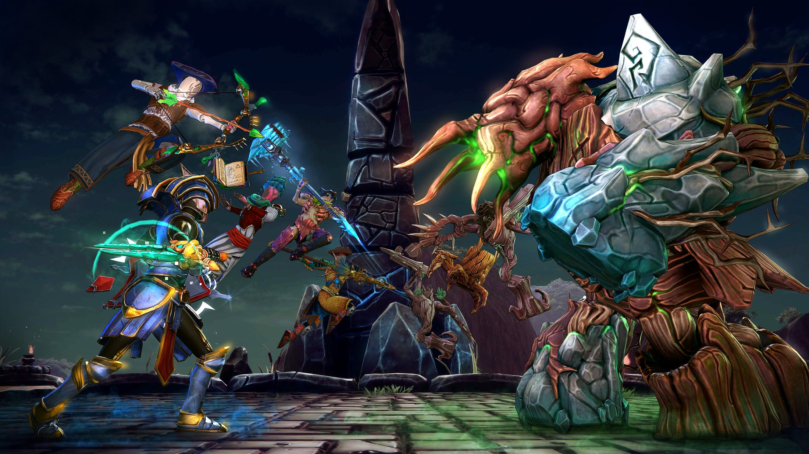

← Back to selected work
03 / Turn-based tactics / Game development
Manikins: Relics and Tactics
Lead Programmer
A turn-based tactical game where players control an army of manikins equipped with relics to defeat enemies.

My contribution
The work behind it
Designed the game architecture and led the development team.
Tools & focus